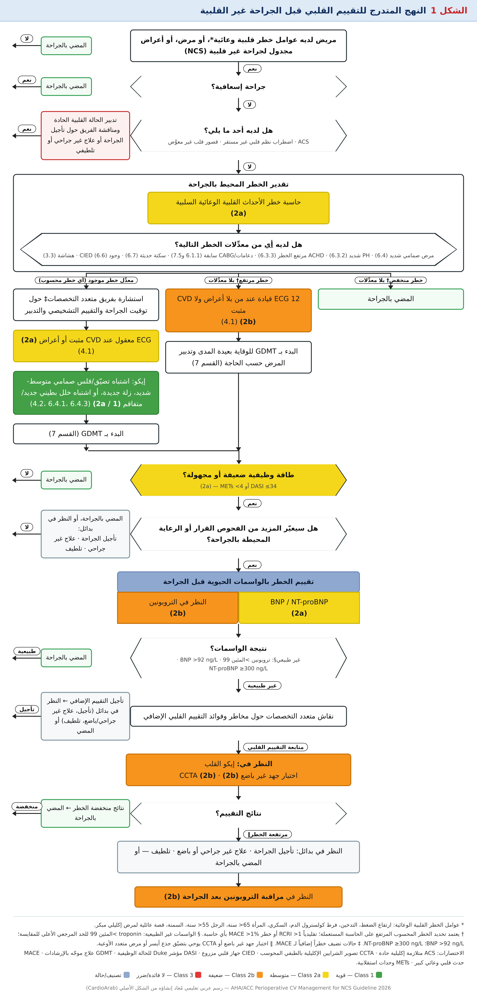

مفتاح قوة التوصية ومستوى الدليل (Table 3)
Table 3 — تطبيق COR وLOE (محدَّث مايو 2019)
| COR — قوة التوصية | الميزان | العبارات المقترحة لكتابة التوصية | عبارات المفاضلة (للتوصيات 1 و2a) |
|---|---|---|---|
| Class 1 — قوية | الفائدة ≫≫ الخطر | يُوصى به · مستطبّ/مفيد/فعّال/نافع · يجب إجراؤه/إعطاؤه | العلاج A موصى به/مستطبّ تفضيلاً على B · يجب اختيار A على B |
| Class 2a — متوسطة | الفائدة > الخطر | من المعقول · يمكن أن يكون مفيداً/فعّالاً/نافعاً | العلاج A غالباً موصى به/مستطبّ تفضيلاً على B · من المعقول اختيار A على B |
| Class 2b — ضعيفة | الفائدة ≥ الخطر | قد يكون معقولاً · قد يُنظر فيه · الفائدة/الفعّالية غير معروفة أو غير واضحة أو غير مثبتة جيداً | — |
| Class 3: لا فائدة — متوسطة (عموماً LOE A أو B فقط) | الفائدة = الخطر | لا يُوصى به · غير مستطبّ/غير مفيد/غير فعّال · لا يجب إجراؤه/إعطاؤه | — |
| Class 3: ضرر — قوية | الخطر > الفائدة | قد يكون ضاراً · يسبب ضرراً · مرتبط بمراضة/وفيات زائدة · لا يجب إجراؤه/إعطاؤه | — |
| LOE — مستوى جودة الدليل ‡ | التعريف |
|---|---|
| A | دليل عالي الجودة‡ من أكثر من RCT واحدة · تحليلات تجميعية لـ RCTs عالية الجودة · RCT واحدة أو أكثر تدعمها سجلات عالية الجودة |
| B-R (عشوائية) | دليل متوسط الجودة‡ من RCT واحدة أو أكثر · تحليلات تجميعية لـ RCTs متوسطة الجودة |
| B-NR (غير عشوائية) | دليل متوسط الجودة‡ من دراسة واحدة أو أكثر غير عشوائية محكمة التصميم والتنفيذ، أو رصدية، أو سجلات · تحليلات تجميعية لها |
| C-LD (بيانات محدودة) | دراسات رصدية/سجلات عشوائية أو غير عشوائية ذات قيود في التصميم أو التنفيذ · تحليلات تجميعية لها · دراسات فيزيولوجية/آلية على البشر |
| C-EO (رأي خبراء) | إجماع خبراء مبني على الخبرة السريرية |
COR وLOE يُحدَّدان بشكل مستقل (أي COR يمكن أن يقترن بأي LOE). التوصية ذات LOE C لا تعني أنها ضعيفة؛ فكثير من الأسئلة المهمة لا تحوي RCTs لكن قد يوجد إجماع سريري واضح.
تعريفات التوقيت والخطر (Table 2)
الجدول 2 يعرّف توقيت الجراحة (كم من الوقت متاح للتقييم) وفئات الخطر. جاء التغيير الأبرز في ضغط نافذة "الإسعافية" إلى أقل من ساعتين، وتوسيع "الحساسة للوقت" إلى 3 أشهر:
| التوقيت | التعريف في 2026 (Table 2) | في 2014 * |
|---|---|---|
| إسعافية Emergency | تهديد فوري للحياة أو الطرف دون تدخل جراحي، مع وقت محدود جداً أو معدوم للتقييم السريري قبل الجراحة — عادة < 2 ساعة | < 6 ساعات |
| عاجلة Urgent | تهديد للحياة أو الطرف دون جراحة، مع وجود وقت للتقييم السريري يسمح بتدخلات تقلل خطر MACE أو المضاعفات الأخرى بعد الجراحة — عادة ≥2 إلى <24 ساعة | 6 – 24 ساعة |
| حساسة للوقت Time-sensitive | يمكن تأجيل الجراحة حتى 3 أشهر للسماح بالتقييم والتدبير قبلها دون التأثير سلباً في النتائج | 1 – 6 أسابيع |
| اختيارية Elective | يمكن تأجيل الإجراء الجراحي للسماح بتقييم كامل قبل الجراحة وتدبير مناسب | حتى سنة |
* عمود 2014 من معرفتي بنص إرشاد 2014 (وهو ما يطابق ما ورد في ملف الجزء الأول السابق عندك) — ليس من ملف 2026.
| فئة الخطر | التعريف |
|---|---|
| خطر منخفض Low risk | الخصائص الجراحية + خصائص المريض مجتمعةً تتنبأ بخطر منخفض لـ MACE < 1% * |
| خطر مرتفع Elevated risk | الخصائص الجراحية + خصائص المريض مجتمعةً تتنبأ بخطر مرتفع لـ MACE ≥ 1% * — يشمل المرضى ذوي الخطر الجراحي المتوسط أو العالي † |
* يتوقف تحديد "الخطر المحسوب المرتفع" على الحاسبة المستعملة. تقليدياً: RCRI >1 أو خطر MACE >1% بأي حاسبة. † يشمل المرضى ذوي الخطر الجراحي المتوسط أو العالي. لاحظ أن 2026 لا يستعمل ثلاثية low/intermediate/high للجراحة كما يفعل ESC، بل ثنائية منخفض/مرتفع.
الخوارزمية المرحلية — Figure 1 كاملة
الخوارزمية (Figure 1) هي لبّ الغايدلاين. أُعيد رسمها هنا خطوة بخطوة؛ اللون على يمين كل مربع يطابق COR: 1 2a 2b. وتنبّه الوثيقة إلى أن نتائج الرعاية الموجَّهة بهذه الخوارزمية لم تُدرس مستقبلياً ولم يُتحقَّق منها، لذا لا تحلّ محل الحكم السريري.

عرض المخطط كنص قابل للنسخ والبحث
أ) الجزء العلوي: من يدخل الخوارزمية؟
* عوامل الخطر القلبية الوعائية: ارتفاع الضغط، التدخين، فرط الكولسترول، السكري، المرأة >65 سنة، الرجل >55 سنة، السمنة، قصة عائلية لمرض إكليلي مبكر.
ب) تقدير الخطر ومعدِّلاته
من هنا تتفرّع ثلاثة مسارات:
† المعيار التقليدي للخطر المرتفع: RCRI >1 أو خطر MACE >1% بأي حاسبة. ‡ الحالات التي تضيف خطراً إضافياً لـ MACE.
ج) الطاقة الوظيفية → الواسمات → التصوير
§ عتبات الواسمات غير الطبيعية: تروبونين >المئين 99 للحد المرجعي الأعلى (URL) للمقايسة؛ BNP >92 ng/L؛ NT-proBNP ≥300 ng/L. ‖ اختبار جهد غير باضع أو CCTA يوحي بتضيّق جذع أيسر أو مرض متعدد الأوعية.
الخوارزمية في جدول مختصر
| # | السؤال | الإجراء | COR |
|---|---|---|---|
| 1 | لا عوامل خطر ولا مرض ولا أعراض؟ | المضي بالجراحة | — |
| 2 | جراحة إسعافية؟ | المضي بالجراحة | — |
| 3 | ACS / اضطراب نظم غير مستقر / قصور قلب غير معوَّض؟ | تدبير الحالة الحادة + مناقشة التأجيل | — |
| 4 | تقدير الخطر بحاسبة + مراجعة 7 معدِّلات | 2a | 2a |
| 5 | خطر منخفض بلا معدِّل | المضي | — |
| 6 | خطر مرتفع بلا معدِّل | ECG (2b) + GDMT | 2b |
| 7 | معدِّل خطر موجود | فريق + ECG (2a) + إيكو (1/2a) + GDMT | 1/2a |
| 8 | طاقة وظيفية ضعيفة (DASI ≤34 / METs <4)؟ | نعم → الخطوة 9؛ لا → المضي | 2a |
| 9 | هل سيغيّر الفحص القرار؟ | لا → المضي أو بدائل؛ نعم → واسمات | — |
| 10 | BNP/NT-proBNP (2a) ± تروبونين (2b) | طبيعي → المضي؛ مرتفع → نقاش فريق | 2a / 2b |
| 11 | تقييم إضافي | إيكو؛ جهد (2b)؛ CCTA (2b) | 2b |
| 12 | خطر مرتفع على التصوير | بدائل (تأجيل/علاج/تلطيف) أو المضي | — |
| 13 | بعد الجراحة | مراقبة تروبونين (2b) | 2b |
الخوارزمية 2026 مقابل 2014
الفرق في الفلسفة (ما يلي من معرفتي بإرشاد 2014 وليس من ملف 2026 — راجعه قبل الاعتماد):
| الجانب | 2014 | 2026 |
|---|---|---|
| البنية | خطوات متسلسلة (إسعاف → ACS → خطر → طاقة وظيفية → فحوص) | شبكة قرار: 3 مسارات حسب الخطر المحسوب + معدِّلات الخطر |
| الحالات القلبية النشطة | دمجت ضمن خطوة ACS | ACS + اضطراب نظم غير مستقر + قصور قلب غير معوَّض صراحةً (ترجع كخطوة مبكرة) |
| معدِّلات الخطر | غير موجودة كفئة | 7 معدِّلات: صمام شديد، PH شديد، CHD مرتفع الخطر، دعامات/CABG، سكتة حديثة، CIED، هشاشة |
| الواسمات الحيوية | لا دور | BNP/NT-proBNP (2a) والتروبونين (2b) في الخوارزمية |
| CCTA | لا دور | خيار تقييم (2b) |
| اختبار الجهد | "إن غيّر القرار" | 2b فقط عند خطر مرتفع + طاقة ضعيفة، وبعد استشارة الفريق |
| التروبونين بعد الجراحة | — | مراقبة بالخوارزمية (2b) ومبحث MINS خاص |
خلاصة الجزء الأول
🔑 أبرز نقاط الجزء الأول
- 2026 = إعادة تأكيد لـ 2024 (مطابق حرفياً)؛ والجديد الحقيقي هو مقابل 2014
- أقسام التوصيات: 103 توصية (33 Class 1، 38 Class 2a، 17 Class 2b، 11 Class 3 لا فائدة، 4 Class 3 ضرر)
- تعريفات التوقيت: إسعافية <2 ساعة، عاجلة 2–<24 ساعة، حساسة للوقت حتى 3 أشهر
- الخطر ثنائي: منخفض <1% أو مرتفع ≥1% (RCRI >1)
- الخوارزمية تبدأ بالإسعاف ثم "الحالات النشطة" ثم الخطر المحسوب + 7 معدِّلات
- عتبات الواسمات: troponin >99th، BNP >92 ng/L، NT-proBNP ≥300 ng/L
- عتبة الطاقة الوظيفية الضعيفة: <4 METs أو DASI ≤34